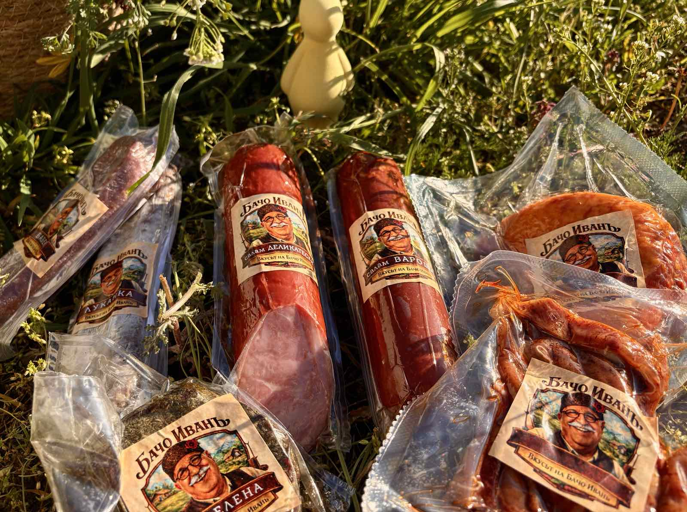

Месни деликатеси с гарантирано качество и автентичен вкус

Месните деликатеси са неизменна част от българската кулинарна традиция. Те съчетават богат вкус, внимателно подбрани подправки и специфична технология на производство, която гарантира отличен резултат във всеки продукт. Качество, на което можете да разчитате. Основата на добрия месен продукт започва от суровината. При производството на деликатеси се използва внимателно подбрано месо, което преминава строг контрол за качество и безопасност. Съвременните производствени процеси позволяват постигането на постоянен вкус и високи стандарти, което е ключово за доверието на клиентите. Стремим се към баланс между традиция и модерни технологии. Рецептурите за месни деликатеси са вдъхновени от традиционната кухня, но се реализират чрез модерни технологии и контролирани процеси. Комбинацията от подправки като черен пипер, чубрица, кимион и сол създава характерния вкус, а технологичният процес гарантира безопасност и постоянство. Зреенето и обработката на месните изделия се извършват при строго контролирани условия на температура и влажност. Това позволява да се постигне балансиран вкус и оптимална текстура на продукта. Всеки етап от производството е подложен на контрол, за да се гарантира високото качество на крайния продукт. Защо да изберете професионално произведени деликатеси? Професионалното производство осигурява редица предимства: постоянно високо качество, строг контрол върху безопасността, стандартизиран вкус и текстура, надеждност на всяка партида. Нашите продукти са подходящи за всяка трапеза. Месните деликатеси са отличен избор както за ежедневна консумация, така и за специални поводи. Те се комбинират чудесно с различни храни и напитки и винаги добавят стойност към трапезата.